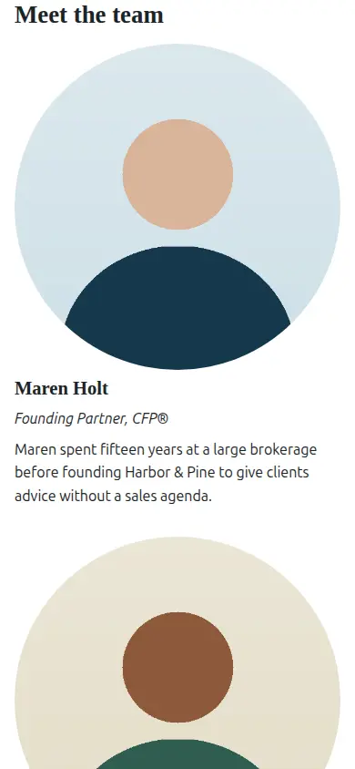

01 / 05
Strata
A section-based website builder with server-enforced brand locks
A website builder for marketing sites in regulated industries. Designers compose reusable sections and lock the brand and compliance parts. Site owners edit everything else by drag and drop, and pages publish as fast, server-rendered HTML.
- Locks are enforced on the server: every write is diffed against the stored draft, and each rule has a test that tries to bypass it.
- One JSON Schema drives the generated TypeScript types and the validated C# records.
- React renders the editor and Razor renders published pages, with parity tests keeping the HTML identical.
- C#
- .NET 10
- React 19
- TypeScript
- PostgreSQL
- Playwright